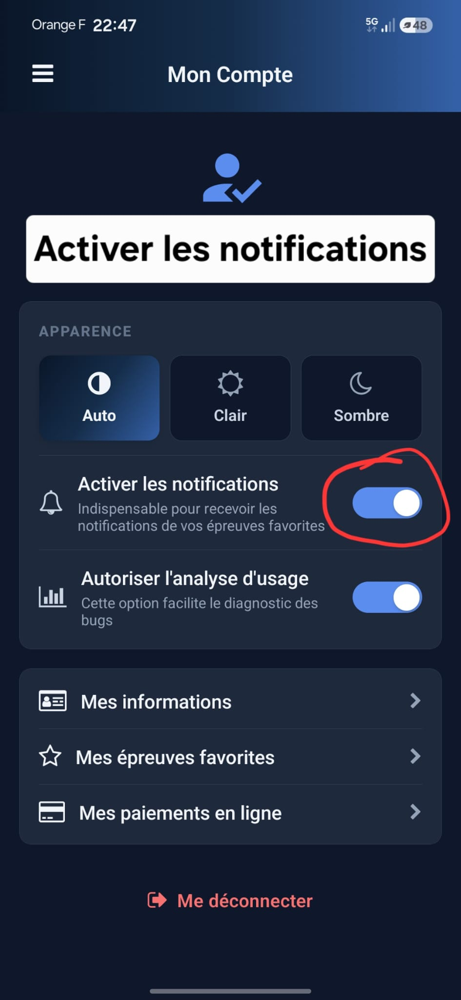
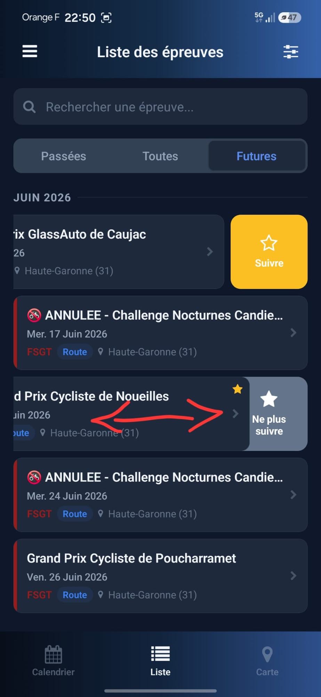
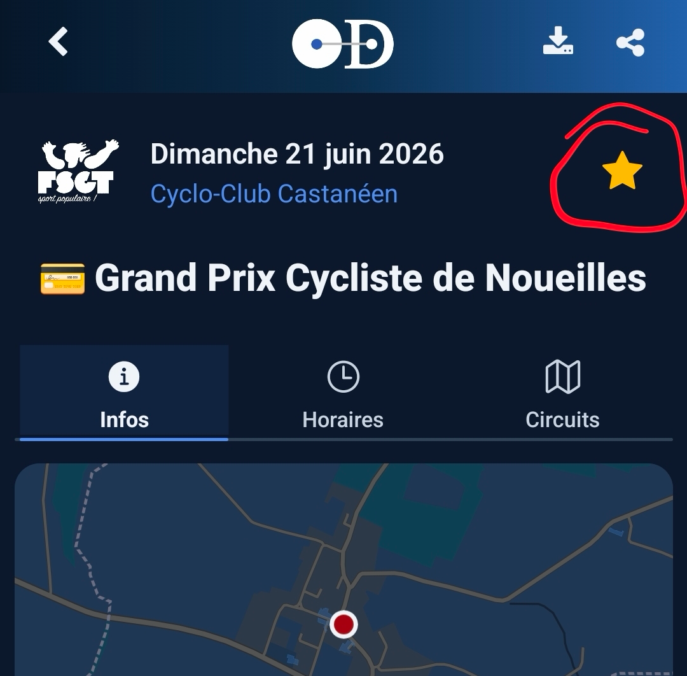
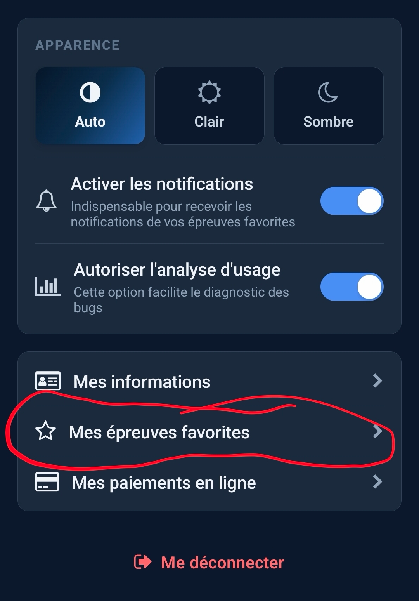
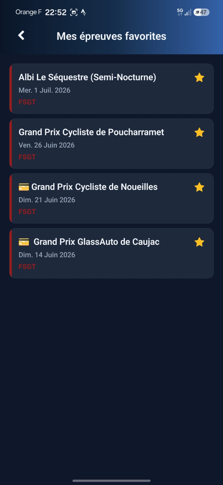
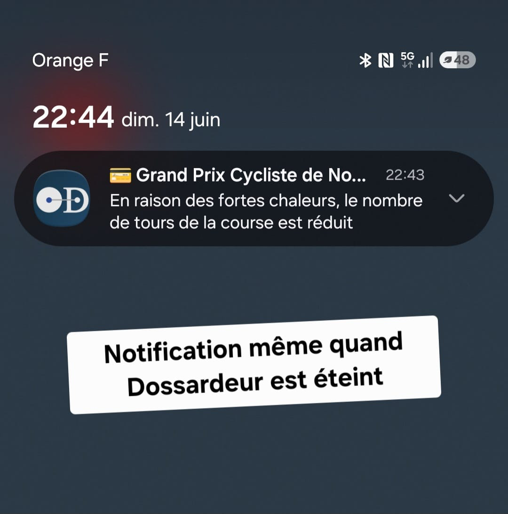

Sécurité · avant la course
Chaussée en mauvais état, gravillons, danger potentiel sur le parcours… Les coureurs partent prévenus.
Suivez vos épreuves favorites et recevez les infos qui comptent — avant, pendant et après la course. Pour les coureurs comme pour leurs proches.
En raison des fortes chaleurs, le nombre de tours de la course est réduit.
🔕 Notification reçue même quand Dossardeur est fermé
L'organisateur peut prévenir coureurs et suiveurs sur de multiples sujets, à chaque étape de l'épreuve.
Chaussée en mauvais état, gravillons, danger potentiel sur le parcours… Les coureurs partent prévenus.
Chute, neutralisation… Surtout pour rassurer les familles et amis qui suivent l'épreuve à distance.
Classements en ligne et complets, photos publiées… Vous êtes notifié dès que tout est disponible.
Vous choisissez librement les épreuves dont vous souhaitez recevoir les informations. Rien de plus simple.

Ouvrez le menu Mon Compte et basculez l'interrupteur « Activer les notifications ».

Dans la liste des épreuves, faites glisser une épreuve vers la gauche puis appuyez sur « Suivre ».

Ouvrez la fiche d'une épreuve et appuyez sur l'étoile en haut à droite.

Depuis Mon Compte, le raccourci « Mes épreuves favorites » vous permet de mettre à jour votre liste quand vous le souhaitez.

Chaque épreuve sélectionnée s'ajoute automatiquement à votre liste « Mes épreuves favorites ».
Dès que l'organisateur publie une information, vous la recevez directement sur votre téléphone — même quand Dossardeur est éteint.

Une fonctionnalité de plus pour rapprocher organisateurs, coureurs et suiveurs.